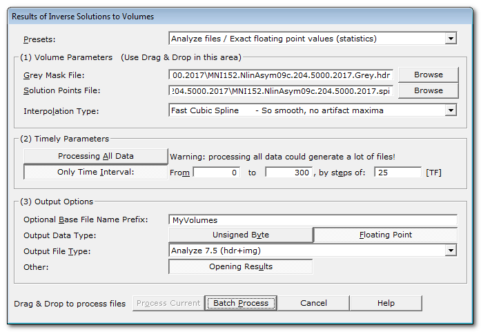
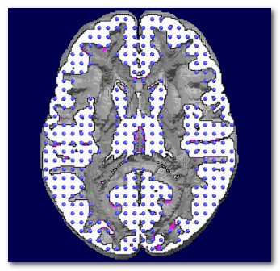
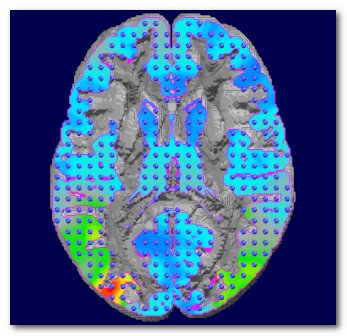
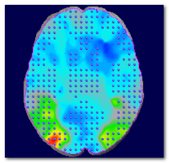
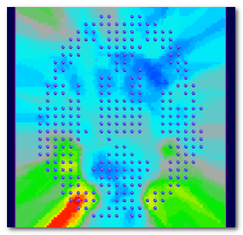
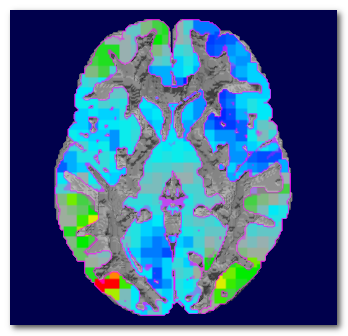
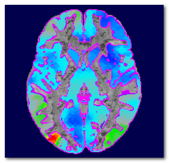
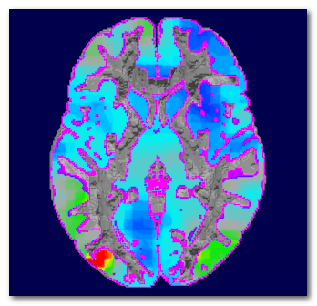

Results of Inverse Solutions to Volume
This toolbox will convert some .ris files, computed from this toolbox , into volumes . The aim is to be able to either display the results directly as volumes , or to merge these results with other 3D modalities, like fMRI.
RIS to Volume, from the Dialog
RIS to Volume, from the Command-Line Interface (CLI)
CLI Options
CLI Examples
Technical points & hints
Grey mask
Types of interpolation
Output data types conversion
Results
RIS to Volume, from the Dialog
Called from the Tools | Inverse Solutions | Results of Inverse Solutions to Volumes menu, the following dialog appears:

|
Presets |
You can quickly set the most important parameters according to some predefined scenarios. Then check and adjust the parameters to your liking. |
|
(1) Volume Parameters |
Input and output volumes parameters. |
|
Give here the grey mask volume associated with the Solution Points of of the inverse solution at hand. You can Drag & Drop a volume file here. This is the mask where the results will be actually computed. Don't give the full brain, or even worse, the full head, otherwise you will have a lot of wrongful extrapolated values. |
|
|
Solution Points File: |
The Solution Points file, i.e. the positions in the brain of the .ris files to be converted. You can Drag & Drop a .spi file here. |
|
How to compute all the intermediate voxels from the grey mask , given the sparse distribution of the solution points' positions. Pick one method from the list, sorted with increasing complexity and visual quality. |
|
|
(2) Temporal Parameters |
|
|
Processing All Data |
Does what it tells, every data point from the .ris file will be sequentially converted to a volume. Be warry of the space it could take on your disk (hint: a lot)! |
|
Only Time Interval: |
Specify only a time interval to be converted. A much safer option than processing all data! |
|
From |
From which time frame (included).. |
|
To |
..to which time frame (included).. |
|
by steps of: |
..by time frame steps. Data will be read by blocks of steps size, then downsampled using a Median Filter on that block. Smaller steps will of course generated more data... |
|
(3) Output Options |
|
|
Optional Base File Name Prefix: |
You can give a meaningful file name prefix for all the resulting files, or leave it empty. Cartool will also postfix each file name with the current block of TFs. |
|
You can write files with these internal types:
Single byte format files use less space, are faster, and could be good enough for display. But this is strongly discouraged for anything like statistics or any other processing, due to the loss of precision during the conversion. Floating point format files on the other hand take more space, but do reflect precisely your original data. Use this option if you want to proceed with some statistics f.ex. |
|
|
Output File Type: |
Pick from the list the file format you want to save your volumes to:
|
|
Opening Results |
Does what is says. However, Cartool will prevent from opening too many files. |
|
Process Current |
Enabled when called from a Tracks (RIS) window, the preprocessing will apply only to this file. |
|
Batch Process |
Enabled when not called from a Tracks (RIS) window :
|
|
Cancel |
Quit the dialog. |
|
Help |
Launch the Help to the right page (should be right here...). |
RIS to Volume, from the Command-Line Interface (CLI)
CLI Options
CLI Examples
CLI Options
You can get the exact RIS to Volume subcommand options with:
cartool64.exe ristovolume --help
Which gives:
Ris-To-Volume command
Usage: Cartool64.exe ristovolume [OPTIONS] [files]
Positionals:
files FILES... List of files
Options:
--spfile FILE Needs: --greyfile
Solution Points file (Required)
--greyfile FILE Needs: --spfile
Grey Mask file (Required)
--timemin INTEGER Starting from time frame (Default:0)
--timemax INTEGER Ending at time frame (Default:EOF)
--timestep INTEGER Stepping by time frames (Default is 1)
--interpolation ENUM:{1NN,4NN,linear,cubickernel}
Type of interpolation
--input-dir PATH:DIR Input directory
--output-dir PATH Output directory
--prefix TEXT Prefix added to the output file names
--file ENUM:{nifti,analyze} [nifti]
File format
--type ENUM:{byte,float} [float]
Internal file type
--dim ENUM:{3,4} [4] File dimensions
--verbose Excludes: --quiet Verbose mode
--quiet Excludes: --verbose Quiet mode
--overwrite Excludes: --no-overwrite
Overwrite existing files
--no-overwrite Excludes: --overwrite
Do not overwrite existing files
-h,--help This message
CLI Examples
Converting all time positions to a single 4D Nifti file:
cartool64.exe ristovolume --spfile=MNI152.NlinAsym20.6926.6mm.spi --greyfile=MNI152.NlinAsym20.Grey.nii -- <files1.ris>
Converting a given time range only, to a single 4D Nifti file:
cartool64.exe ristovolume --spfile=MNI152.NlinAsym20.6926.6mm.spi --greyfile=MNI152.NlinAsym20.Grey.nii --timemin=10 --timemax=20 -- <files1.ris>
Converting the full time range, but only by steps of 200 time frames:
ccartool64.exe ristovolume --spfile=MNI152.NlinAsym20.6926.6mm.spi --greyfile=MNI152.NlinAsym20.Grey.nii --timestep=200 -- <files1.ris>
Converting the full time range, but only by steps of 200 time frames, to Nifti 3D & byte storage files, and a file prefix:
cacartool64.exe ristovolume --spfile=MNI152.NlinAsym20.6926.6mm.spi --greyfile=MNI152.NlinAsym20.Grey.nii --timestep=200 --file=nifti --type=byte --dim=3 --prefix=MyPrefix -- <files1.ris>
Converting the full time range, but only by steps of 200 time frames, to Analyze 3D & byte storage files, and a file prefix:
cartool64.exe ristovolume --spfile=MNI152.NlinAsym20.6926.6mm.spi --greyfile=MNI152.NlinAsym20.Grey.nii --timestep=200 --file=analyze --type=byte --dim=3 --prefix=MyPrefix -- <files1.ris>
RIS to Volumes - Technical points & hints
Grey mask
Types of interpolation
Output data types conversion
Grey mask
The grey mask provided will constrain the outputs in some important ways.
As a reminder, solution points are indeed a downsampled version of the grey mask given during the computation of the inverse matrices. So you must use the same grey mask as the one used during the Inverse Matrix creation! Ris files, Solution Points and grey mask should match altogether to guarantee an optimal interpolation.
Here we can see how the grey mask and the solution points match (left), and and example of the interpolated results they can generate (right):

If the mask provided is bigger than the original grey mask, then it will not be optimally covered by the solution points distribution. Voxels too far from any solution point will end up being extrapolated (instead of interpolated), "created from nothing" so to speak. This is definitely something to be avoided.
Here we can see (left) that the brain has been used instead of the grey mask, or worse (right) the full head. A lot of internal voxels (white matter f.ex.), or external voxels (outside the brain) are literally created ex nihilo :

In summary, use the correct grey mask associated to the inverse matrice's solution points . All other masks will generate some problems of their own (and who needs more problems?).
Types of interpolation
We can compute the value of any voxel that sits within a reasonable range of a set of solution points . To do that, we need an interpolation formula that will combine the solution points' values, into a new value.
Cartool provides 4 interpolation methods, all with their pros and cons. There is no perfect method, any of them is basically creating values where there were none beforehand. This is not specific to Cartool, inverse solutions or EEG itself, just a general consideration...
Here are the available interpolations in Cartool:
| Method | What it does | Pros | Cons |
| 1 Nearest Neighbor | The value from the single closest solution point is taken |
No new values are created, you only
spread your exact data No new maxima are being created |
No new values are created, so not really an
interpolation.. Results look like little cubes - visual aspect is therefor not very engaging (unless you are into cubism) |
| 4 Nearest Neighbors | The values from the 4 closest solution points are taken, and mixed up according to the inverse of their relative distances |
This is
a
well-know interpolation method This is the interpolation used for the display of inverse solutions No new maxima are being created |
RResults don't look that great, and are a bit jagged or serrated. |
| Linear/strong> |
The values from the
8 solution points around a given voxel are taken, and
linearly mixed
|
This is
a well-known interpolation method No new maxima are being created |
RResults are smooth, but still look like little patches or blocks |
| Fast Cubic Kernels | It convolves the data with a big-enough Cubic B-spline-like Kernel. This is not a Cubic-Spline Interpolation, though. |
Best visual results No new maxima are being created, with the Cartool implementation |
Your colleagues will be jealous of these results - deal with it |
See here a side by side visual comparison of the 4 interpolations, 1NN (top left), 4NN (top right), Linear (bottom left) and Cubic Spline Kernel (bottom right):


The Cartool implementation of these interpolation methods has been done in such a way to ensure that no new maxima are being artificially created. This is a very important point, as f.ex. a regular Cubic B-Spline interpolation can and will generate new maxima, and can even create negative values out of positive-only input. This is to be totally avoided, as the maximum position can be of utmost importance, and artificially displacing it is not an option.
Still note that the maxima from the generated volumes could be slightly lower that the ones from the .ris files, as solution points usually do not fit exactly on voxels' centers.
Output data type conversion
Cartool can currently write files with these internal types:
- unsigned bytes: integer positive values, in the range [0..255]
- floating points: the real values from the input .ris files
The global scaling of the original data will be preserved in both cases. But in the unsigned byte file format, expect to lose some numerical precision, as well as having lower graphical quality.
If you aim at doing statistics, or proceed with some more processing of your own, then save as floating points at the cost of bigger files. If you just aim for visualization, then you may use the unsigned byte version, which produces smaller files.
RIS to Volumes - Results
-
Preprocessed files are written in the same directories as their sources.
Output file names can have the user's prefix added, and a postfix composed from the current block of time frames .
To remember that we are dealing with volumes from .ris, the .ris string is added before the file extension, too:
<prefix>.<input file>.TFXXX-YYY.ris.nii or .hdr -
Verbose file .vrb (text), showing all the parameters.